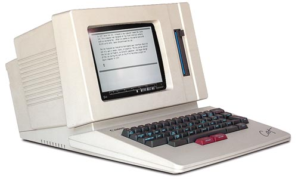
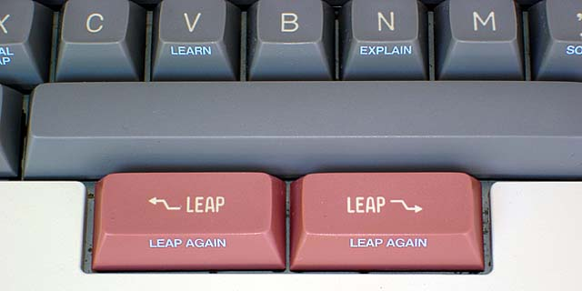

Canon Cat
Jef Raskin's radical text-centric computer that rejected files, applications, and the mouse.

Overview
The Canon Cat (model V777) was a task-dedicated desktop microcomputer released in July 1987 by Canon Inc., designed by Jef Raskin — Apple employee #31 and the initiator of the Macintosh project — through his Palo Alto company Information Appliance, Inc. It was the most complete commercial implementation of Raskin's radical interface philosophy: a text-centric, keyboard-driven computing appliance with no files, no applications, and no operating system in the conventional sense. All work occurred in a single unified document stream, navigated by content rather than by spatial position or hierarchical filing. Priced at $1,495 (~$4,200 in 2025), approximately 20,000 units were manufactured before Canon discontinued it after only six months.
The Cat's defining interaction innovation was the LEAP system: two bright pink thumb keys below the spacebar. Holding a LEAP key and typing characters caused the cursor to jump in real-time to the nearest matching text — incremental search as the sole navigation mechanism. There was no mouse, no cursor keys, no menus, and no icons. Commands were issued via chorded key combinations using the USE FRONT key, and a hidden Forth programming environment lurked beneath the surface. The entire machine was a coherent argument about how humans and computers should relate — and it lost to the Macintosh, Windows, and the file-folder metaphor that Raskin himself helped set in motion.
Deep dive
Jef Raskin joined Apple in 1978 as employee #31 and initiated the Macintosh project in 1979, naming it after his favorite apple variety. His vision was for a low-cost, keyboard-driven 'people's computer' — what he called PITS ('Person In The Street') — aimed at non-technical users at a $500 price point. When Steve Jobs took over the Macintosh project in 1981 and transformed it into a mouse-driven, graphically rich machine with a much higher price tag, Raskin left Apple in 1982 to pursue his own vision. He founded Information Appliance, Inc. (IAI) in Palo Alto and built the Swyft prototype (Motorola 68008-based), followed by the SwyftCard for the Apple IIe (1985, $89.95) as an interim product. IAI then licensed the full system to Canon Inc., which manufactured and marketed the Cat through its typewriter division — not its computer division. This organizational misalignment, combined with the 1987 Black Monday stock market crash (which caused IAI's investors to pull funding), doomed the product. Canon discontinued the Cat after just six months, allegedly due to internal politics between its professional and consumer divisions.
The defining interaction innovation of the Canon Cat. Two bright pink LEAP keys sit below the spacebar — one for forward search, one for backward. To navigate anywhere in your document, you hold a LEAP key and begin typing. The cursor jumps in real-time to the nearest occurrence of those characters. Release the LEAP key, and you're positioned precisely where you wanted to be. This means you navigate by content, not by spatial position — you leap to remembered words or phrases rather than scrolling or clicking through a file hierarchy. Additional LEAP mechanics: LEAP + SHIFT scrolls the view. Tapping LEAP alone moves one character ('Creep'). Pressing both LEAP keys together highlights text between the cursor and the previously leapt location, which can then be moved by leaping again. LEAP + USE FRONT + 'Leap Again' finds the next occurrence of the same search term. A dedicated PAGE key handles page-by-page navigation and creating new blank pages. The genius is that there is exactly one mechanism, learned once, applied everywhere. Commands are found the same way as content — by leaping. There is no modal distinction between 'content mode' and 'command mode.' This is search-as-UI taken to its logical extreme, decades before Spotlight, Alfred, the browser omnibox, or command palettes.
The Cat has no file system. No hierarchical folders. No Save or Open commands. All documents exist in a single persistent stream of text. You navigate by content (leaping to remembered words), by recency (the cursor returns to where you last were when you power on), and by time. Raskin's argument was that people remember what they wrote about and approximately when they wrote it — but do not reliably remember where they filed it. The machine should organize around human memory, not the other way around. There are also no separate applications. A built-in dictionary (90,000 words) checks spelling automatically. The CALC key performs calculations inline. Rows and columns function as a spreadsheet with formulas. An internal 300/1200 bps modem handles telecommunications — highlight text and press SEND to transmit. All of these capabilities are simply available everywhere, not locked inside separate programs. A hidden setting even unlocks a complete Forth programming environment. Users can type Forth code directly into a document, highlight it, and execute it via USE FRONT + ANSWER — output appears inline. Canon did not advertise this capability; IAI published programmer documentation openly.
Raskin was emphatically anti-modal — he believed that interfaces should never trap users in states where the same action produces different results depending on context. The Cat's keyboard has blue front-face labels on keycaps (visible when looking down at the keys). Holding the USE FRONT key activates these secondary functions as chords. Release USE FRONT, and the operation ends — no mode persists. There's also an EXPLAIN key (USE FRONT + N) that, when invoked after an error beep, inserts explanatory prose into your document rather than displaying a modal dialog box. Raskin's design principle was that interfaces should exploit human habit formation. With only one interaction paradigm to learn, the Cat could become second nature — muscle memory, not cognitive load. This philosophy, later codified in his book The Humane Interface (2000), was rooted in cognitive psychology: habits form best when a single stimulus always produces a single response. The Cat was engineered to be habit-forming.
The Cat ran on a Motorola 68000 CPU at 5 MHz with 256 KB of DRAM and 256 KB of system ROM, written entirely in tForth ('token-threaded Forth'). Storage was a single 3.5-inch 256 KB floppy drive (custom Canon MD-3301). The 9-inch monochrome CRT displayed 672 × 344 pixels (80 × 24 characters). It weighed 17 pounds (7.7 kg). Raskin's original design called for no hard power switch — the Cat would remain in low-power sleep and wake instantly when you typed, capturing every keystroke even before the display fully lit. Canon engineers infamously added a hard power switch, believing its absence was an oversight.
The Cat sold approximately 20,000 units — not nothing, but far short of what its ambitions demanded. Canon's typewriter division marketed it poorly; reviewers praised the interface but the market had already chosen WIMP interfaces. Ezra Shapiro's BYTE magazine review (October 1987) called it 'A Spiritual Heir to the Macintosh.' IAI closed in 1991 after investors pulled funding following the 1987 Black Monday crash. Raskin continued developing these ideas through his later Archy project (2005, originally 'The Humane Environment'). Today the Cat's influence echoes in unified workspace tools like Notion, Coda, and Roam Research; in the LEAP function recently added to the Left editor by Hundred Rabbits; and in every command palette and omnibox that lets users navigate by typing what they want. The Cat asked what computing would look like if content, not applications, was the organizing principle — and we are still answering that question.
Team & pioneers
- Jef Raskin. Apple employee #31, initiator of the Macintosh project. Founded Information Appliance Inc. in 1982 after leaving Apple. Designed the Cat's entire interface philosophy.
- Information Appliance, Inc. (IAI). Palo Alto company founded by Raskin. Developed the Swyft prototype and SwyftCard before licensing the full system to Canon.
- Canon Inc.. Manufactured and marketed the Cat through its typewriter division. Discontinued the product after 6 months.
Media

Sources
- Wikipedia — Canon Cat
- Raskin Center — Canon Cat Manual & Documentation
- OldComputers.net — Canon Cat
- Old Vintage Computing Research — Refurb Weekend: Canon Cat (Cameron Kaiser, 2024)
- Lee Byron — til/leap (LEAP interaction analysis)
- Reproof Blog — The Canon Cat and the Mac that Steve Jobs Killed
- BYTE Magazine, October 1987 — Ezra Shapiro review
- DigiBarn Computer Museum — Canon Cat collection